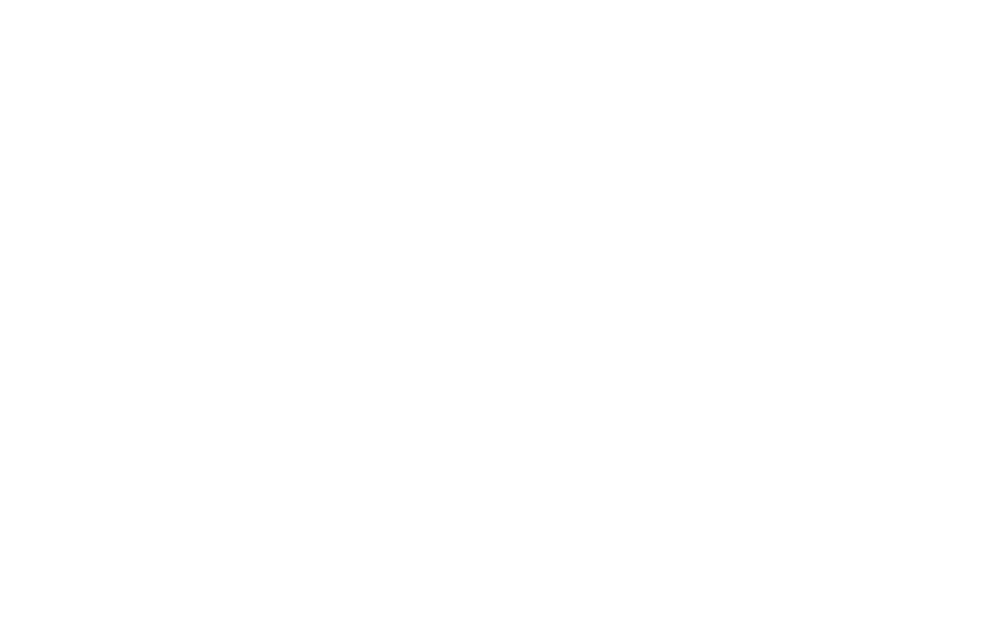
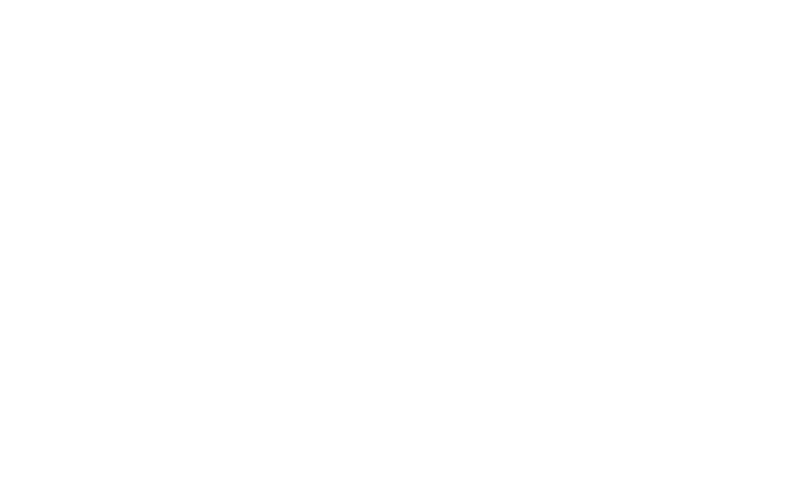
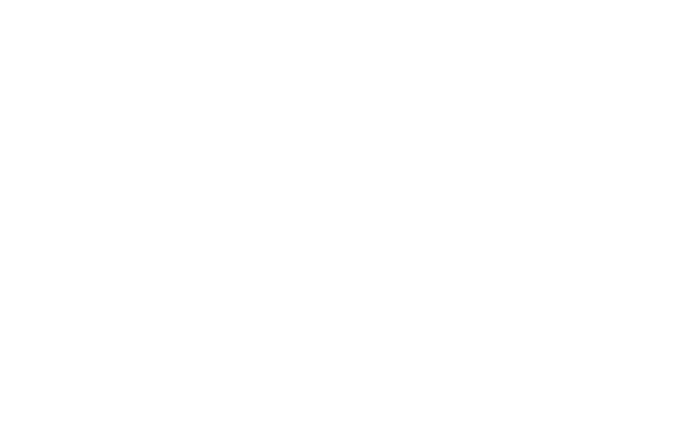

SuperCorners
Supercharge your Mac's Corners & Screen Edge Zones

macOS Hot Corners, Reimagined for Power Users
Native macOS Hot Corners are limited to just four corners and a handful of static system actions. SuperCorners unlocks your entire screen perimeter: adding 4 new middle-edge zones, context-aware per-app action sets, modifier-key guards, and the power to trigger any app, shortcut, script, or hotkey instantly.
8 Screen Trigger Zones
Use the 4 traditional screen corners plus 4 middle edge zones (top, bottom, left, right) to double your trigger points.
Per-App Action Sets
Configure unique gestures for individual apps like Safari, Xcode, or Slack, alongside global system-wide defaults.
Simulate Hotkeys
Trigger complex keyboard shortcuts effortlessly by simply bumping an edge or corner with your cursor.
Run macOS Shortcuts
Execute any Apple Shortcut directly from a screen corner, turning edge gestures into custom multi-step automations.
Modifier Key Protection
Eliminate accidental activations by requiring ⌘ Command, ⌥ Option, ⌃ Control, or ⇧ Shift when entering zones.
Visual Feedback & Overlays
Get immediate feedback with subtle toast notifications or sleek on-screen visual overlays confirming your action.
Commands & AppleScripts
Launch terminal commands, run custom AppleScripts, open specific files, folders, or web URLs with one swift gesture.
Fine-Grained Sensitivity
Customize trigger delays, separate sensitivity curves for corners vs. zones, and edge-height activation thresholds.
Lightweight & Native
Crafted with pure Swift and SwiftUI for zero battery drain, instant responsiveness, and a clean macOS Tahoe design.
Visual Feature Tour
Explore how SuperCorners enhances your daily macOS workflow with customizable zones, templates, and contextual sets.

8 Edge & Corner Zones
Configure actions for top-left, top-right, bottom-left, bottom-right corners and the middle edge zones along each screen border.

Universal Action Picker
Assign native system commands, simulated hotkeys, app launchers, file openings, AppleScripts, and macOS Shortcuts in seconds.

Per-App Action Sets
Create dedicated gesture profiles for specific applications or maintain global fallback actions that work everywhere.

Modifier Keys & Delays
Prevent accidental triggers with modifier key requirements (⌘, ⌥, ⌃, ⇧), click-to-activate options, and adjustable sensitivity sliders.

Visual Feedback & Overlays
Enjoy subtle, unobtrusive toast messages or sleek corner indicators so you always know when and what action was triggered.
Installation
SuperCorners requires macOS 13.0 (Ventura) or later. Choose your preferred installation method below:
Option 1: Install via Homebrew (Recommended)
Run the following commands in your Terminal to tap the cask, install SuperCorners, and clear quarantine flags:
brew tap daniyalmaster693/casks
brew trust --cask daniyalmaster693/casks/supercorners
brew install --cask supercorners
xattr -dr com.apple.quarantine /Applications/SuperCorners.app
Option 2: Manual DMG Download
1. Download SuperCorners.dmg from GitHub Releases.
2. Open the .dmg file and drag SuperCorners into your Applications folder.
3. On first launch, macOS may show an unverified developer prompt. Navigate to System Settings → Privacy & Security, scroll down, and click Open Anyway.
4. Grant Accessibility Permissions in System Settings so SuperCorners can simulate hotkeys and system actions reliably.